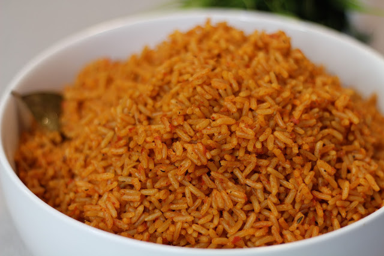

Jollof Rice

One of the best known Nigerian dish
This is one of the most popular food in the country, infact it can be said that one is not fully a
Nigerian if you have never tasted this food. Welcome to the world of Jollof rice.
INGREDIENTS
- Rice
- Tomato sauce
- Maggi
- Salt
- Pepper
- Curry
- Onions
- Groundnut oil
STEPS
- Put Rice in fire
- Parboiled after some minutes
- fry the tomato sauce in hot(steamy) groundnut oil, add the other ingredients when with frying
- Put all the fryed ingredients into the rice
- Do not steer the food when you put the ingredients into the rice
- after a few minutes, your jollof rice is ready
- you can the food with chicken or eggs